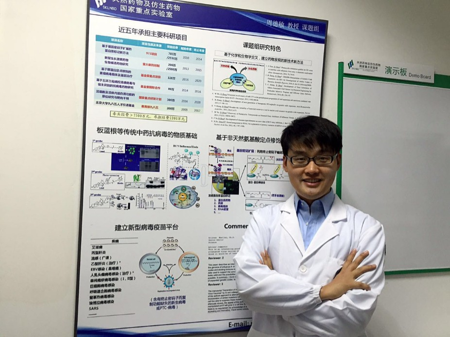
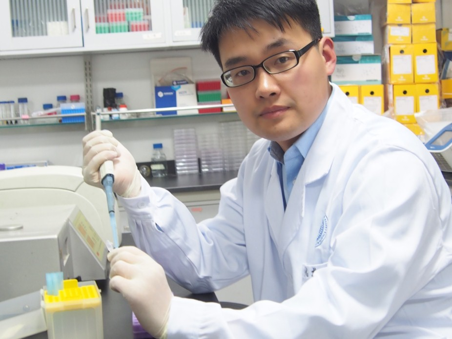

【新闻背景】为深入贯彻落实全国高校思想政治工作会议精神和《中共中央国务院关于加强和改进新形势下高校思想政治工作的意见》精神，围绕落实立德树人根本任务，积极培育和弘扬社会主义核心价值观，深入挖掘和宣传表彰大学生先进典型，充分发挥先进典型的示范引领作用，在全社会营造促进大学生健康成长的良好环境，由中央宣传部、教育部、共青团中央、人民日报社共同指导，人民网、大学生杂志社、中国大学生在线和光明日报教育部联合主办了“第十二届中国大学生年度人物评选”活动。2017年5月4日，评选结果正式揭晓，本科组直博生司龙龙成功当选。司龙龙为“中国大学生年度人物”评选活动自2006年启动以来，医学部首位获奖者。

